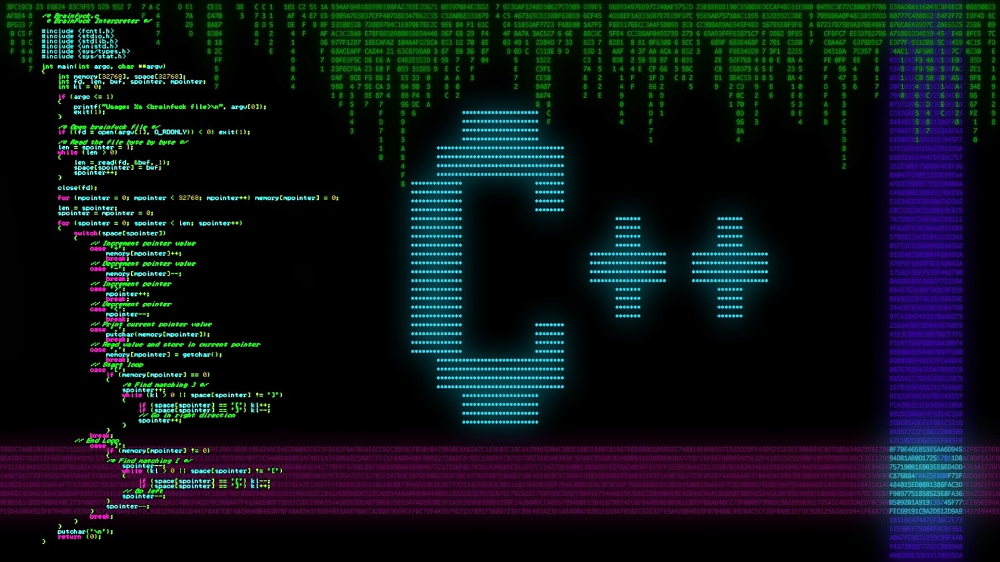
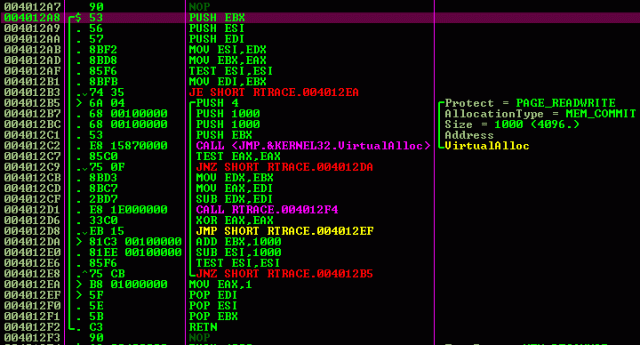

En ciencias de la computación, un lenguaje intermedio es el lenguaje de una máquina abstracta diseñada para ayudar a realizar el análisis de un programa informático. El término proviene de su uso en compiladores, donde el código fuente de un programa es traducido a un modo más apropiado para transformaciones de mejora de código antes de generar el código objeto o código máquina para una máquina determinada.

El diseño del lenguaje intermedio difiere típicamente del lenguaje de máquina de tres maneras fundamentales: